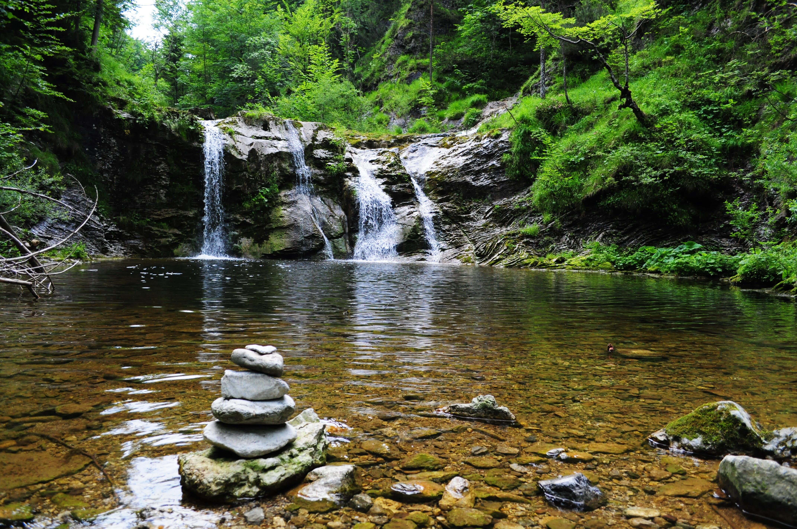

Explore Our Trails
Explore Scenic Trails
Discover the natural beauty of Wildlife Haven National Park by exploring our network of scenic trails. Whether you're an avid hiker, nature enthusiast, or casual walker, we have trails for all skill levels and interests.
Trail 1: Pine Ridge Trail

Pine Ridge Trail winds through dense pine forests and offers stunning views of the surrounding mountains. This moderate-level trail is perfect for hikers seeking a scenic adventure with moderate elevation gain.
- Length: 5 miles (round trip)
- Difficulty: Moderate
-
Features:
- Panoramic views of the valley
- Abundant wildlife sightings
- Picnic areas along the trail
Trail 2: Oak Creek Loop

Oak Creek Loop meanders along the tranquil Oak Creek, passing through lush meadows and groves of oak trees. This easy-level trail is suitable for all ages and offers opportunities for birdwatching and photography.
- Length: 2.5 miles (loop)
- Difficulty: Easy
-
Features:
- Riverside views
- Wildflower displays in spring
- Interpretive signs about local flora and fauna
Trail 3: Summit Ridge Trail

Summit Ridge Trail leads to the highest peak in the park, offering breathtaking panoramic views of the entire region. This strenuous-level trail is recommended for experienced hikers due to steep ascents and rocky terrain.
- Length: 8 miles (round trip)
- Difficulty: Strenuous
-
Features:
- Summit vistas of surrounding mountains
- Alpine meadows filled with wildflowers
- Wildlife encounters including marmots and mountain goats
Trail 4: Waterfall Trail
Waterfall Trail takes hikers on a journey through lush forests to a magnificent waterfall cascading into a crystal-clear pool below. This moderate-level trail offers a refreshing retreat into nature.
- Length: 3 miles (round trip)
- Difficulty: Moderate
-
Features:
- Spectacular waterfall views
- Tranquil stream crossings
- Shaded picnic spots near the falls
Trail 5: Canyon Rim Trail

Canyon Rim Trail follows the edge of a deep canyon, offering dramatic views of rugged cliffs and winding rivers below. This intermediate-level trail provides a thrilling adventure for hikers.
- Length: 6 miles (round trip)
- Difficulty: Intermediate
-
Features:
- Stunning canyon overlooks
- Bird of prey sightings
- Unique geological formations
Trail 6: Lakeside Trail

Lakeside Trail meanders along the tranquil shores of a pristine mountain lake, offering serene views and opportunities for wildlife spotting. This easy-level trail is ideal for leisurely walks and family outings.
- Length: 2 miles (loop)
- Difficulty: Easy
-
Features:
- Scenic lake vistas
- Birdwatching opportunities
- Benches for relaxation by the water
Trail 7: Ridgeview Trail
Ridgeview Trail traverses a series of ridges with panoramic views of the surrounding landscape, including distant mountains and valleys. This moderate-level trail is a favorite among photographers and nature enthusiasts.
- Length: 4 miles (round trip)
- Difficulty: Moderate
-
Features:
- Sweeping vistas at ridge viewpoints
- Wildflower displays in season
- Opportunities for birdwatching
Trail 8: Wilderness Loop
Wilderness Loop offers a rugged and remote hiking experience, winding through old-growth forests and meadows teeming with wildlife. This strenuous-level trail is for adventurous hikers seeking solitude and pristine wilderness.
- Length: 10 miles (loop)
- Difficulty: Strenuous
-
Features:
- Remote backcountry scenery
- Wildlife encounters including elk and bears
- Camping opportunities along the trail
Trail 9: Creek Crossing Trail

Creek Crossing Trail meanders alongside a babbling creek, passing through shaded forests and open meadows. This easy-level trail is perfect for families and those seeking a peaceful nature walk.
- Length: 1.5 miles (one way)
- Difficulty: Easy
-
Features:
- Tranquil creek views
- Wildflower displays in spring
- Benches for resting and picnicking
Trail 10: Sunset Vista Trail

Sunset Vista Trail leads hikers to a panoramic overlook where they can enjoy breathtaking views of the sunset over the mountains. This easy-level trail is popular for evening walks and photography.
- Length: 1 mile (round trip)
- Difficulty: Easy
-
Features:
- Spectacular sunset views
- Interpretive signs about the park's geology and history
- Benches for relaxation while enjoying the sunset